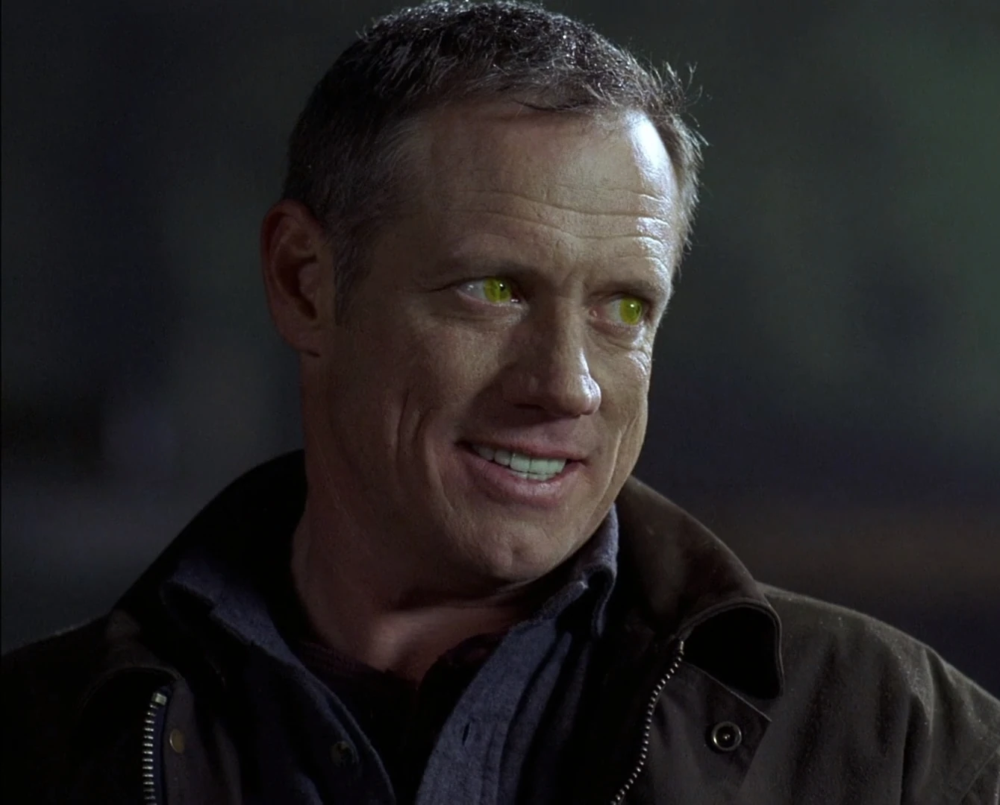
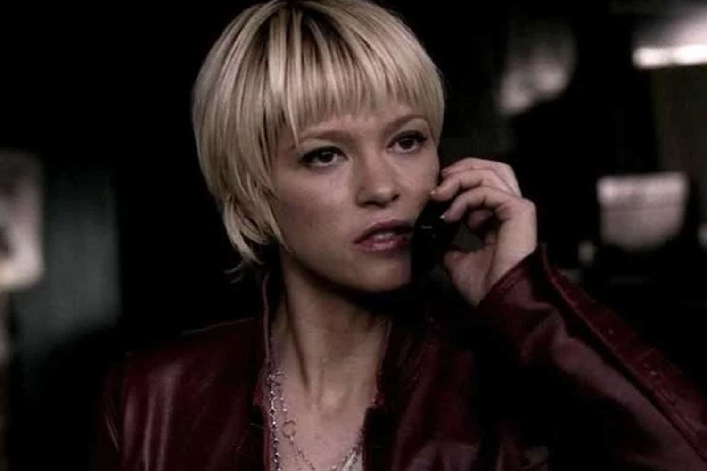
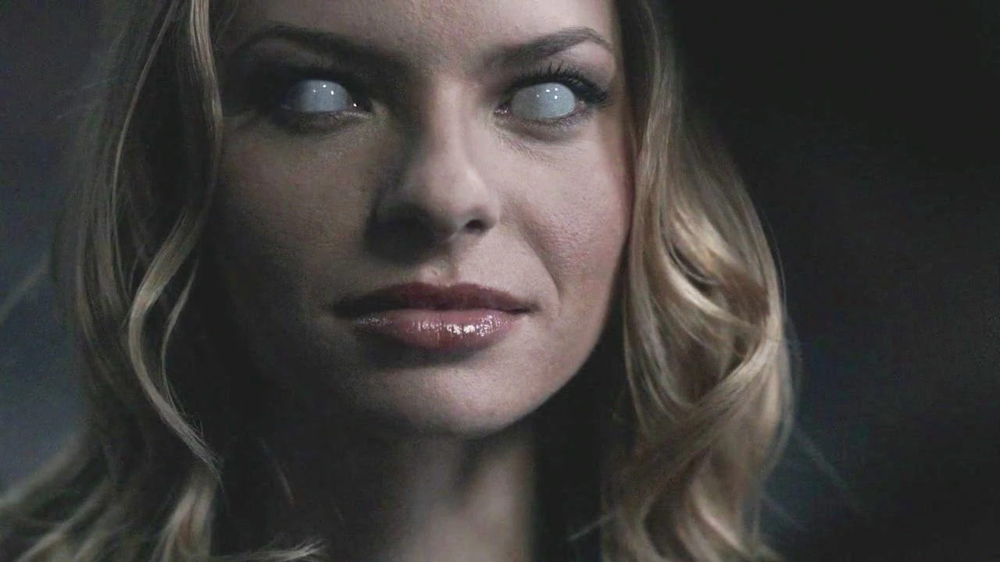

Azazel era um demônio poderoso e um Príncipe do Inferno que servia Lúcifer. Até Sin City, o nome de Azazel não foi revelado e ele era referido por apelidos como O Demônio, O Demônio de Olhos Amarelos ou Olhos Amarelos. Depois que ele matou Mary Winchester, os homens de Winchester o caçaram por quase duas décadas e meia e finalmente o mataram como vingança no final da segunda temporada; no entanto, suas ações continuaram a influenciar eventos e personagens mesmo anos após sua morte. Por exemplo, Sam e Dean foram assombrados por visões ou alucinações dele, e seu plano de libertar Lúcifer e iniciar o Apocalipse ainda aconteceu, apesar de ter morrido anos antes.
Este demônio sem nome, conhecido apenas como "Meg" em homenagem à mulher que ela originalmente possuía, era um seguidor leal de Lúcifer. Ela trabalhou para seu "pai" e colega leal a Lúcifer, o Príncipe do Inferno Azazel, na 1ª temporada, quando conheceu e se tornou inimiga da Família Winchester. Ela estava entre os servos demoníacos de Lúcifer na 5ª temporada. Após a re-prisão de Lúcifer em sua jaula em Canção do Cisne, Meg buscou vingança contra Crowley por ter ajudado a prender Lúcifer e tomar seu lugar como Rei do Inferno; para este fim, ela fez uma aliança difícil com Sam e Dean, precisando de mais aliados enquanto seus companheiros leais eram caçados pelas forças de Crowley. Ela também formou uma atração romântica pelo anjo Castiel, que parecia compartilhar isso até certo ponto. Meg também se juntou a Sam, Dean, Castiel e Crowley para deter os Leviatãs. Meg foi capturada por Crowley no final de Survival of the Fittest e foi torturada por ele por um ano, mas se absteve de lhe dar as informações que ele queria dela, em vez disso, passou-as para os Winchesters e Castiel quando eles vieram em seu socorro. Ela rechaçou Crowley por tempo suficiente para que os meninos recuperassem a Tabuleta do Anjo e escapassem antes que ele a matasse. Anos depois, a Sombra, o ser que controla o Vazio, para onde vão todos os anjos e demônios após a morte, assume a forma de Meg em várias ocasiões para se comunicar com Castiel e os Winchesters.
Lilith era um poderoso demônio de olhos brancos e o primeiro demônio criado por Lúcifer, além de ser o selo final dos 66 Selos que tiveram que ser quebrados para que ele fosse libertado de sua jaula. Ela ficou presa no Inferno até maio de 2007, quando escapou e derrotou sem esforço vários demônios rivais para assumir a antiga posição do falecido Azazel como líder do exército de demônios que ele havia libertado ao lado dela. Lilith liderou este exército na Terra e comandou o resto das forças do Inferno na Guerra dos Selos contra as Hostes do Céu. Ela foi responsável pela destruição de sessenta e seis selos que guardavam a jaula de Lúcifer em 2008, terminando com ela permitindo que Sam Winchester a matasse e libertando Lúcifer em 2009.[3][4][5] Na hierarquia demoníaca do Inferno, ela, como o demônio original, ficou em primeiro lugar entre todos (além de Alastair, Os Cavaleiros do Inferno, Caim e os Príncipes do Inferno), e foi superada apenas pelo próprio Lúcifer. Embora os Winchesters quisessem impedir Lilith de criar Lúcifer, seu rancor com ela era muito mais profundo do que isso devido ao grande papel que ela desempenhou na morte de Dean Winchester e em seu sofrimento no Inferno, tendo não apenas garantido que ele fosse lá para quebrar o primeiro selo mas chegando ao ponto de lançar um cão infernal sobre um Dean indefeso, matando-o, para mandá-lo para lá e forçando um Sam igualmente indefeso a ver tudo acontecer na sua frente. Anos mais tarde, Lilith foi ressuscitada do Vazio por Deus para recuperar o Equalizador dos Winchesters. Ela se revelou a seus inimigos, enquanto os informava sobre o fim do jogo de Deus para eles, dizendo aos irmãos que o fim de Deus para eles era Sam e Dean se matarem antes que ela destruísse a arma e os deixasse. No entanto, a ressurreição de Lilith foi breve, pois o arcanjo Miguel a feriu logo depois.
